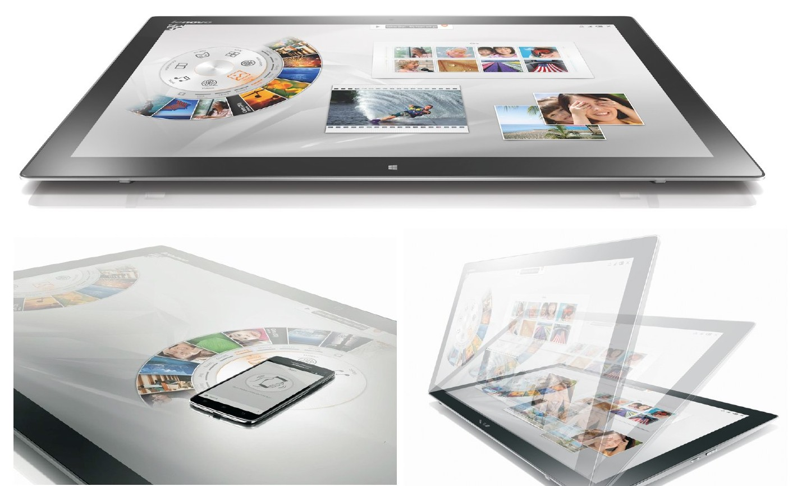
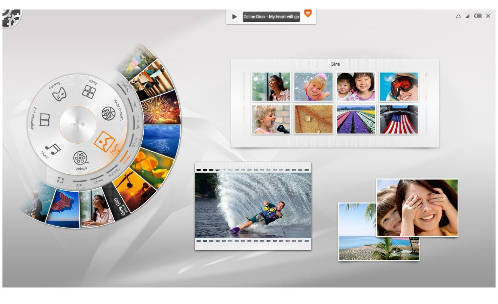

SHARED SCREEN
联想 Horizon
面向共享大屏的界面设计
探索大尺寸桌面设备中的内容组织与共享体验，以 Aura 2.0 界面连接图片、媒体和应用入口。
- 来源
- 个人作品集
- 方向
- 面向共享大屏的界面设计
01
从设备形态理解使用方式
Horizon 的大尺寸显示与桌面形态，为不同于手机和传统桌面窗口的交互提供了空间。
作品集将产品形态与界面共同呈现，说明体验设计需要回应屏幕摆放方式与观看、触控之间的关系。

02
用环形入口组织共享内容
Aura 2.0 通过环形入口、图片浏览与媒体界面组织内容。环形结构与大幅缩略图共同建立清楚的内容入口。
界面让不同内容以直观、可浏览的形式出现，发挥大屏在展示和共同观看方面的特点。
图文依据：LIYOU PORTFOLIO 2024，第 94—96 页。
NEXT / 全部作品 ↗